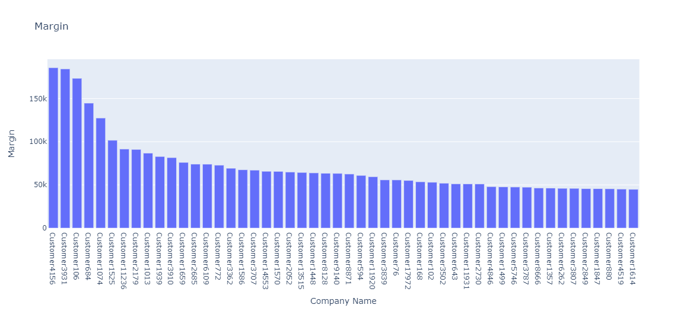
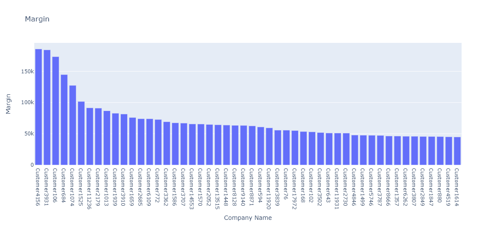

The site traffic analysis made for the three countries tells us about the number of visitors visiting with respect to different channels, the channels with low visitors are the areas that the company needs to focus on.
The site traffic analysis made for the three countries tells us about the number of visitors visiting with respect to different channels, the channels with low visitors are the areas that the company needs to focus on.


According to the Pareto principal, we can see that almost 80% of the total margin comes from 20% of the high value customers, the threshold margin being 1000$.


Industries dropped in the second quarter of 2020 as compared to its first quarter differentiated by their tiers can be seen

.png)

The data has been processed to get number of times a company has been in association with SMB in the past 6 quarters in the US, UK and Australia. It is observed that more than 70% of the companies associated with BGM only once, 0.2% of all the partnerships are continued for more than 7 times, 30 being the highest.
 



The factors that determine the profit earned by the company according to us are as follows :
Revenue is the income generated from normal business operations and includes discounts and deductions for returned merchandise. It is the top line or gross income figure from which costs are subtracted to determine net income.
Gross margin is the difference between revenue and cost of goods sold, divided by revenue. Gross margin is expressed as a percentage. Generally, it is calculated as the selling price of an item, less the cost of goods sold, then divided by the same selling price
Higher the number of sales, more is the profit earned
Higher the frequency of order, more is the relability and accountability that the company will continue to buy products, increasing the sales and profits